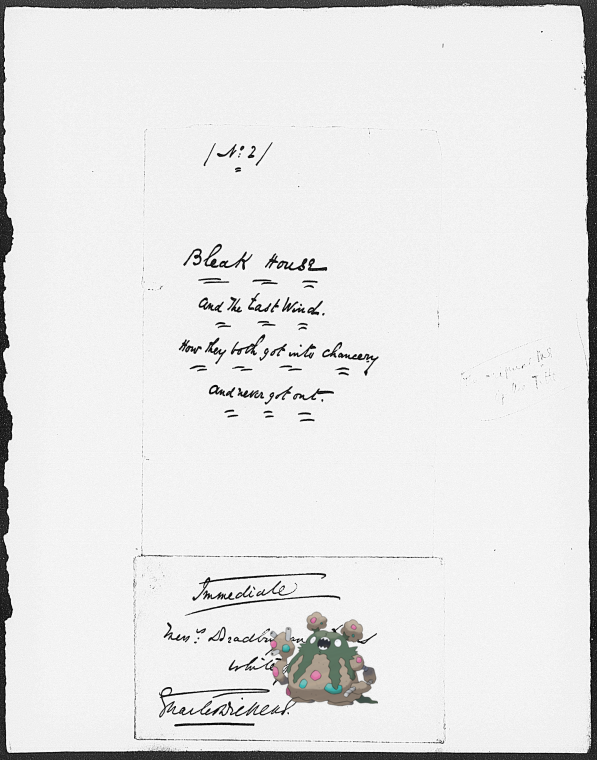

-
![Bibarel ; Rotterdam [Township]. http://digitalcollections.nypl.org/items/8059f8d0-c5f6-012f-9bc1-58d385a7bc34](media/finding-TnZnhSKR.png) Bibarel | Rotterdam [Township].
Bibarel | Rotterdam [Township]. -
Weedle + 1815.
-
Simisage + It used to be proper, but it don't go now.
-
Pansage + Junction of Greenbrier and New Rivers.!
-
Cresselia | Austin or Patrick Ford?!
-
, Aerodactyl + Letter to the Chevalier de Fonvielle!
-
Golduck + Virdan Restaurant.
-
Skiploom ; Niagara Falls.!
- 
-
Seismitoad @ La bien venue; le début de Mad'elle Chameroy en Paradis.!
-
Boldore + Potter, Clarkson
-
Volcanion @ Fayoum. Nº 430.
-
Celebi – [Prison ship Jersey.].
-
Rotom + Ruins between Ramah and Jerusalem!
-
![Venusaur @ Ticknor, [William D.], ALS to. Jul. 13, 1852.! http://digitalcollections.nypl.org/items/72ec70e0-4bbd-0130-5c5d-58d385a7b928](media/finding-EzjttPUL.png)
-
Yamask @ View of the Sea Wall.!
-
 Lickitung on U.S.M.S. "Philadelphia," breakfast.
Lickitung on U.S.M.S. "Philadelphia," breakfast. -
Machamp ; George Mason.!
-
Diancie ; H. C. Pulliam!
-
![Blastoise – TWELFTH ANNUAL BANQUET [held by] SONS OF THE REVOLUTION OF MISSOURI [at]](media/finding-uNrBaHfq.png)
-
 Swampert, Woobat + Two women walking along street, Natchez, Mississippi.
Swampert, Woobat + Two women walking along street, Natchez, Mississippi. -

-
Wynaut ; Letter to Gen. [Edward] Hand.
-
Combee @ Vue du Pont Kasr - el - Nil. Nº 260.
-
 Gible | Strephon & Chloe!
Gible | Strephon & Chloe! -